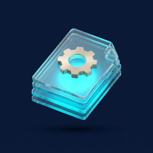

ازدحام الطوارئ وتعثّر التدفّق
طوابير الانتظار وتكدّس الحالات يرهقان الكوادر ويؤخّران الرعاية الحرجة.
نيوريكس شريك تقني سعودي يحوّل وجع التشغيل الصحي — من ازدحام الطوارئ إلى رفض مطالبات التأمين وتشتّت بيانات المرضى — إلى أنظمة ذكية تُحدث أثراً قابلاً للقياس.
كل انتظار، كل مطالبة مرفوضة، كل ملف مبعثر ليس عطلاً تقنياً — بل خللاً في رعاية المريض. وهنا بالضبط نعمل.
طوابير الانتظار وتكدّس الحالات يرهقان الكوادر ويؤخّران الرعاية الحرجة.
أخطاء الترميز وضعف التحقّق من الأهلية يستنزفان الإيراد ويؤخّران التحصيل.
بيانات المريض موزّعة بين HIS وLIS وRIS وPACS بلا سجل موحّد.

الإدخال المزدوج والأعمال الورقية تُبطئ المنشأة وتزيد احتمال الخطأ.
جدولة ذكية وتنظيم تدفّق يخفّضان الازدحام ويسرّعان الرعاية.
تحقّق مسبق من الأهلية وترميز مدعوم يرفعان نسبة القبول من أول مرة.
تكامل عبر FHIR يجمع البيانات المبعثرة في صورة واحدة موثوقة.
لوحات ومؤشرات لحظية ودعم قرار سريري يضعان المعلومة وقت الحاجة.
الجهات التي صُمّمت حلولنا لخدمتها.
نيوريكس ليست مورّد برمجيات — بل شريك تقني يهندس النتائج في القطاع الصحي، متوائم مع برنامج تحوّل القطاع الصحي ورؤية المملكة ٢٠٣٠.